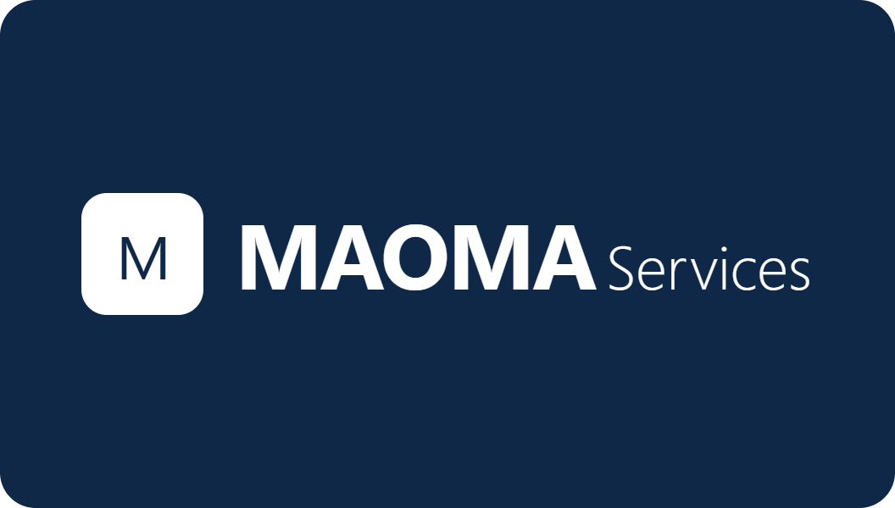

Votre bras droit opérationnel & Experte Notion Certifiée
Office Manager indépendante, pour que vous puissiez enfin vous concentrer sur votre cœur de métier 🚀
Je suis Isabelle Bellard, Office Manager indépendante et Consultante Notion certifiée. Mon rôle ? Être votre bras droit opérationnel : je structure, j'optimise et je pilote votre organisation au quotidien. L'office management, c'est bien plus que du secrétariat : c'est piloter votre back-office, coordonner vos équipes, déployer les bons outils et vous libérer des tâches chronophages. En tant qu'assistante administrative indépendante et secrétaire externalisée, j'assure aussi le quotidien : emails, agenda, facturation, relances, suivi administratif. De la mission ponctuelle au bras droit permanent, à distance ou en présentiel, partout en France.
Coordination des équipes et des prestataires, optimisation des processus internes, déploiement d'outils collaboratifs (Notion, ERP). Je structure votre organisation pour gagner en efficacité et en sérénité. Tout roule, sans que vous ayez à tout faire !
Conception, déploiement et formation sur des espaces Notion sur-mesure pour TPE et PME. Certifiée Notion Product Builder No-Code, je transforme votre chaos organisationnel en hub de pilotage clair et efficace. En savoir plus →
Pilotage complet de votre back-office : facturation, suivi fournisseurs, gestion des contrats, tableaux de bord, reporting et mise en conformité. Finis les Post-it qui disparaissent mystérieusement !
Gestion des emails, agenda, courriers, relances, classement, archivage. Support administratif professionnel pour vous libérer des tâches chronophages. Comme une assistante de direction, mais sans les charges fixes !
Suivi des commandes, relation clients, pilotage de l'activité commerciale, reporting des ventes, gestion des bases de données clients. Un accompagnement opérationnel pour développer sereinement votre chiffre d'affaires.
Conception et coordination de vos séminaires, colloques et événements d'entreprise. De la logistique à la gestion budgétaire, je prends en charge l'intégralité du projet. Vous brillez, je m'occupe du reste !
Je mets à profit mon expertise en réponse aux appels d'offres publics et privés, ainsi qu'en gestion des achats et coordination logistique pour vous accompagner sur ces volets techniques. Un dossier bien ficelé, ça change tout.
Structuration, mise à jour et exploitation de vos données clients, fournisseurs ou produits. Création de tableaux de bord dynamiques et d'indicateurs de performance. Vos données deviennent enfin exploitables !
Tous mes services disponibles à distance pour toute la France. Flexibilité, réactivité et expertise, où que vous soyez. Comme si j'étais dans votre bureau... mais en mieux organisé !
Certifiée Notion Product Builder No-Code, je conçois, structure et déploie des espaces de travail Notion sur-mesure pour les TPE et PME. Fini le chaos des fichiers éparpillés, des tableaux Excel fossilisés et des to-do lists perdues entre deux Post-it. Notion devient le hub central de votre activité et vous, vous reprenez enfin le contrôle. 🎯
Vous avez entendu parler de Notion mais ne savez pas par où commencer ? Ou votre ébauche ressemble davantage à un chantier qu'à un outil de pilotage ? Je prends en charge la conception complète de votre environnement, de l'audit de vos besoins jusqu'à la mise en production. Clé en main, sans prise de tête.
Analyse de votre organisation actuelle, identification des points de friction, cartographie de vos besoins. On part de votre réalité, pas d'un template générique.
Modélisation de vos bases de données, structuration de vos espaces de travail, création de vos tableaux de bord. Solide comme un roc, flexible comme du bon sens.
Mise en place de vos workflows, connexion avec vos outils existants via Make ou Zapier. Vos process s'automatisent, vous respirez.
Clients, fournisseurs, intervenants, produits : je structure et fiabilise vos bases, même les plus volumineuses. Vos données deviennent un vrai levier de pilotage !
Dashboards personnalisés pour piloter votre activité en un coup d'œil : suivi commercial, projets, planning, indicateurs clés.
Votre activité évolue, votre Notion aussi. Je reste disponible pour optimiser, corriger et faire grandir votre espace dans la durée.
Notion est puissant, mais seulement si on sait s'en servir. Je propose des formations adaptées à tous les niveaux, du débutant complet au manager qui veut embarquer toute son équipe. En présentiel dans la région d'Angers ou à distance pour toute la France.
Formation collective en présentiel (région angevine). Pages, bases de données, vues, templates : les fondamentaux de façon concrète et opérationnelle.
📍 Angers · 89 € / participant · 8 à 12 personnes
Formation individuelle ou petit groupe, sur-mesure selon vos usages. On travaille directement dans votre espace Notion, sur vos cas concrets.
📍 Présentiel ou distanciel · Tarif sur devis
Accompagnez votre équipe dans l'adoption de Notion. Sessions en intra-entreprise, adaptées à votre secteur et vos processus métiers.
📍 Présentiel ou distanciel · Tarif sur devis
Certification Notion Product Builder No-Code
Certification professionnelle reconnue (RNCP39108-BC01) · Mention Très Bien (17,3/20) · Une expertise validée, pas juste de l'enthousiasme ! 😄
J'accompagne des profils variés, avec un point commun : le besoin de gagner du temps, de s'organiser mieux et de se concentrer sur leur cœur de métier.
Quelle que soit votre activité, je m'adapte à votre culture d'entreprise et à vos méthodes de travail. Une approche sur-mesure, toujours.
France entière
Assistante virtuelle
Maine-et-Loire
Vendée
Île-de-France
Interventions en présentiel privilégiées pour l'organisation de séminaires, colloques et événements professionnels nécessitant une coordination sur site.
Vous souhaitez externaliser votre gestion administrative ? Déployer Notion dans votre entreprise ? Former vos équipes ? Organiser un événement professionnel ? Décrivez-moi votre besoin, je vous répondrai rapidement avec une proposition adaptée.
En soumettant ce formulaire, vous acceptez notre politique de confidentialité.
📧 Email : maoma.services@gmail.com
📞 Téléphone : 06 22 72 71 96